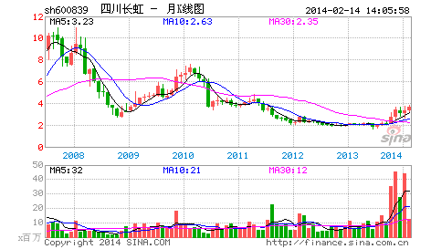

长虹，老子变孙子，只要三亿美圆！
2006/6/6 21:09:45

这是“收购中国，从宝邯之争说起！”的续篇。长虹是谁，即使你从未在资本市场上晃荡，从未被电视、媒体上十几年如一日的广告、报道所污染，也应该知道！那长虹是谁的？当然不是人民的，如果是人民的，那现在人民的名字叫国资委。而上市公司长虹是谁的？在目前中国的环境下，肯定是大股东的，大股东四川长虹电子集团有限公司，也就是他的老子。儿子是老子的儿子，这很中国地天经地义，但已越来越全球资本市场地没了意义，老子一夜可变孙子，这就是市场经济。
股改了，这老子现在只是三分之一的老子了。长虹18亿的股份中，长虹集团只占6亿，从原来53%的绝对控股一夜之间变成现在33%的相对控股。相对控股也还是老子，毕竟还是大股东，而现在的中国上市公司，大股东是老子，其他都是孙子。但是，让现在的长虹“老子变孙子”，其代价只要三亿美圆。
目前长虹已有所回升的股价是3元多人民币，要成为大股东，也就6亿多一点的股票，大概三亿美圆上下。且不算其品牌价值和市场渠道、人才等软价值，目前长虹的每股净资产是5元多人民币，公积金有5亿多美圆。最近长虹刚收了美菱，触角伸向白色家电，而赵少帅也刚因为把长虹重新纳入快速增长轨道而获大奖，这对于猎手来说都是好消息，猎物越来越肥了。
3亿美圆是一个什么概念？对于国外一个中型基金，3亿美圆只是一个尾数的尾数，对于国内的私募基金来说，有3亿美圆的，现在也算不了什么大鳄了！资金从来都不是问题，另外一个更不是问题的就是，即使10亿美圆，一定复制不了现在的长虹，这是无疑的。买东西其实很简单，如果3亿可以控制一个10亿都复制不了的东西，这个买卖当然就可以买卖了。
显然，在现在的市场中，长虹绝对不是特例，而是相当普遍。最近，外资等的收购已经不断出现，这种收购并不是单单在某个产业，而是系统的。不是有人以中国成为世界工厂而兴奋吗？但黄雀只知道，成为世界工厂的大股东而控制世界工厂，是一个更简单的、可以目标的目标，而且是一个正不断目标了的目标了！
回复